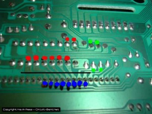
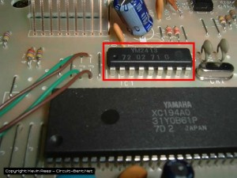
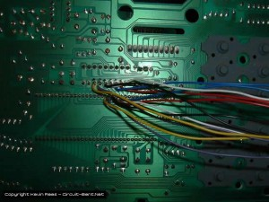
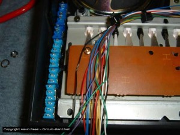
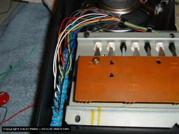
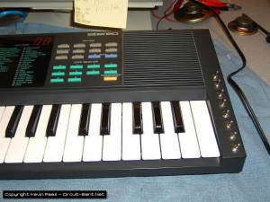
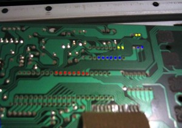

After some major diggin’ for info I found that no one had a specific guide for bending a Yamaha PSS-270, so I decided to make one. Credit to Sean “audioid” (myspace.com/audioidbentaudio), and Paul from circuitbenders.co.uk for the info on this bend. This bend involves cutting data lines that go from the FM synth chip (YM2413) to the main chip (XC194A0). The pins on the FM chip that go to the main chip are pins 2, 3, 4, 5, 6, 7, 17, and 18. You cut the traces, and then solder wires on either side of the cut. Take the pair of wires from one cut, and solder them to a switch, and this will allow you to turn the flow of data on and off.
{kind=link}
{kind=link}
{kind=link}
{kind=link}
{kind=link}
{kind=link}
{kind=link}
{kind=link}
{kind=link}
This is a picture of the board flipped over. I have the FM chip out-lined in red, and you can see the big chip under it.
In this picture I have the solder points from the FM chip marked in red dots, and the blue dots are where they go to the main chip. Ignore the green dots. The black line is where you *carefully* cut the data lines. I used a volt meter to check and make sure that the lines no longer had continuity.
I’ve indicated the FM chip in this picture.
Here’s all 16 wires in place. Some people recommend drilling very small holes on both sides of the trace cuts, and putting wires through them, or scraping the coating off so you can solder on it. I just soldered the wires onto the pins of the chip, which can be dangerous because you run the risk of overheating it. I used a pair of wires that are the same color for each connection to make wiring up the switches easier.
I’ve got the board back in place, and the wires bundled up nice and securely.
Now all the switches are wired up, and we are ready to button her back up.
I found the most room for the 8 switches on the right side of the keyboard. Just measure and drill carefully, and it will come out looking great.
What the Bends do:
Each switch now controls the flow of data from the FM chip to the main chip. Turn the PSS on and select a patch (let’s pull up #89 “ghost”), I usually play some keys(don’t know if you have to do this or not), then turn some switches off , now select a different patch, and turn the switches back on. Now try playing the new patch. If it went well some of the data from the all patch got held up, and then inserted into the new patch making a totally different sound. Sometimes leaving the connections off will change the sounds also. I’ve noticed them some of the bent up patches will only work when multiple keys are played. I’ve heard that this will effect the drums as well, but I haven’t gotten it to do much with them as of yet.
Getting some good sounds out of this takes some tinkering, but it’s worth it. The only downer is that it’s hard to reproduce the sounds that you get, so if you have a good one be sure to grab a sample while you can. Using the keyboard this way can corrupt the data to the point where the chip crashes in a noisy mess, but all you have to do is turn all the data connections back on, and turn the keyboard off, then back on. All the data connection switches have to be on for the keyboard to work “normally”.
John from Bentpedals sent me these photos of a PSS-140 that he did up using this same mod. The main chip is colored in red, the FM chip in blue, ignore the yellow.
I did the mod on a PSS-140 for Mjm using the info that John gave me. This is what he had to say about it “endless amounts of fun. endless unpredictable possibilities. i don’t want to stop messing with it”. Here’s some photos of that.
Wesley did the same mod to a PSS-170, but his link seems to be dead.
I’ve successfully done this on a Yamaha SHS-10 Keytar , along with some other circuit bends. Tinsoldier sent me a diagram of his circuit bent SHS-10 which I will post here. I can’t comment on it at yet because I haven’t had the chance to try them myself.
Disclaimer:
As always I won’t be held responsible if you try this bend and your Yamaha get’s hurt. I’ve done a lot of playing with this keyboard, and it seems real solid to me. This bend works on some of the other PSS series keyboards (like the 140) with a similar chip setup, but since I’ve only done a 270 and 140 so far I can’t gurantee it will work on all of them.
{ 0 comments… add one now }